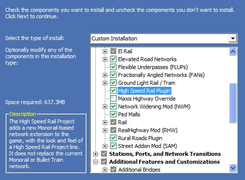
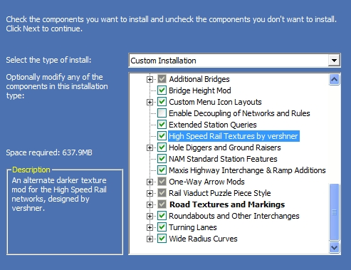
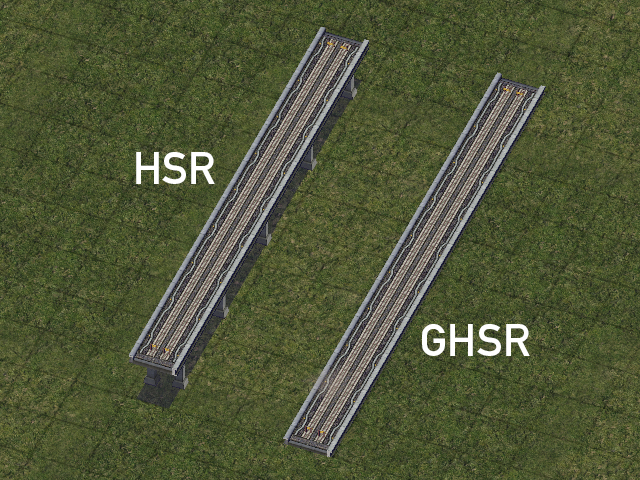
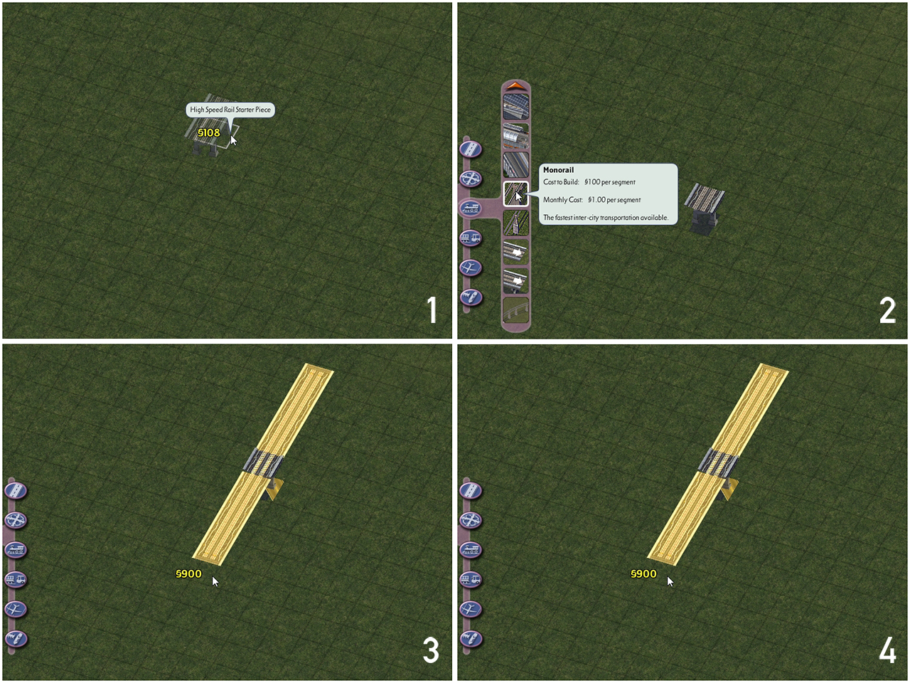
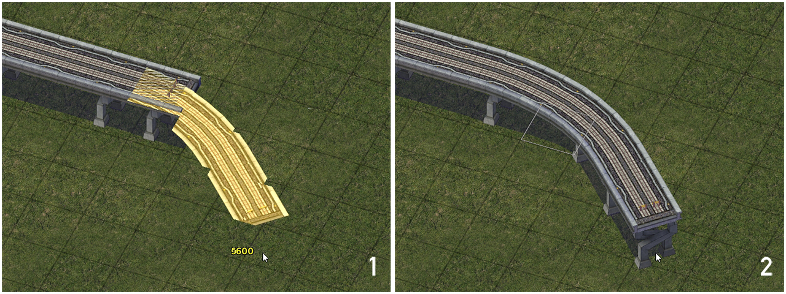
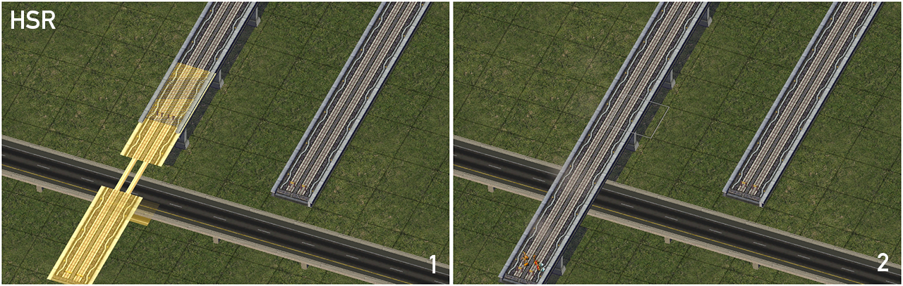
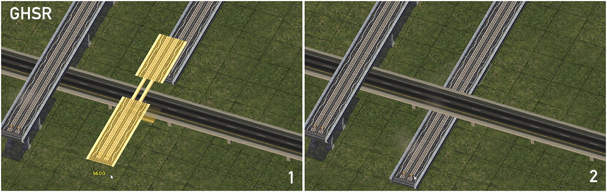

The High Speed Rail Project (HSRP) adds two new “model variations” to the network systems. A models variation is a new set of models for a network in this case for Monorail. In the early years of SC4, new technology was found by Smoncrie which allowed us to use a single puzzle piece to create a starter for a new set of textures or models for the same network, there are already a few mods that take advantage of this technology, namely draggable GLR, SAM, and RHW. At the moment, there are two new model variations included in this mod, HSR, elevated, and GHSR, a ground version.
The original HSRP replaced Monorail. At the time this was the best way of implementation, and was created by 3ddz, founded by Murakamon, on the 24th of February 2006. Since then there has only been one release, HSRP Beta 1. This mod uses the original models from that release for HSR, and a lowered version for GHSR. No other modifications were made to the models.
NOTE: The High Speed Rail Project, in its current form, is no longer in active development. Plans for future HSR-type functionality are still being determined as of NAM Version 36.
To install the High Speed Rail Project via Custom Installation, under the "NAM Networks and Network Expansions" section, simply select the "High Speed Rail Project" option. This box is automatically selected if one chooses the "Networks and Traffic Simulator" or "Complete Installation" options.
The High Speed Rail Project also includes a custom darker texture option, made by vershner. This option can be selected under the "Additional Features and Customizations" section.
The High Speed Rail Project includes a total of two Monorail-based draggable override networks: the (Elevated) High Speed Rail network (HSR), which consists of an elevated track at a height of 15.5 meters (functionally equivalent to "Level 2" in NAM elevation nomenclature), and the Ground High Speed Rail network (GHSR), which sits essentially at ground level, at 1 meter elevation.
To build an HSR override network, first place the appropriate starter piece from the menu, then select the Monorail network tool, and drag Monorail through the starter. The stretch of Monorail should convert to the appropriate HSR network at that point.
{kind=link}
Curves to diagonals can also be accomplished through simple dragging motions, as with any other draggable network. HSR has been designed to have a slightly wider radius for its default curve, which should be taken into consideration when building over/underpasses near curves.
{kind=link}
Supported draggable crossing setups can be built much in the same way that Monorail crossings are, by simply dragging the HSR tracks over (or under) the desired network as appropriate. Due to game limitations, the crossing will initially show as a Monorail crossing in the preview, but provided the setup is supported, it will change to the appropriate HSR override network. HSR networks cannot cross other networks at the same height level, as grade separation is key to allowing the trains to operate at high speeds. Both HSR and GHSR, however, can cross over or under an L1 elevated network, such as the L1 RealHighway shown below.
 {kind=link}
{kind=link}
If a crossing reverts back to the base Monorail network, or results in a "blank spot" in the network, it is a sign that the particular setup is not supported by the plugin. Refer to the Network Capabilities section of this document for guidance. Note that some setups not possible through draggable means can be constructed through the use of static puzzle pieces (see List of Menu Items below.
The capacity and speed of both the Elevated and Ground High Speed Rail override networks is identical to that of the base Monorail network. The precise capacity depends on the Traffic Plugin one has installed. Capacity is generally calculated on a per tile basis by the game.
Capacities
| HSR Network Type | Classic | Low | Medium | High | Ultra |
|---|---|---|---|---|---|
| All | 3000 | 10000 | 16000 | 30000 | 65200 |
Speed
| Vehicle Type | Speed |
| HSR Train | 220 |
As the High Speed Rail Project's override networks are Monorail-based, Monorail automata will appear on HSR tracks by default. If one wishes to change the appearance of the HSR trains, are several third-party HSRP automata skins available (which probably look nice on your Monorail tracks as well). One such set is the VDK Train Mods Vol 7 pack by NAM Team member vester.
The High Speed Rail Project supports several different types of bridges, for both the elevated HSR network and GHSR. To build the bridges, simply drag the Monorail network across the body of water (or sufficiently deep canyon), and options for HSR bridges will appear.
HSR Bridges
- Cable-Stayed HSR Bridge
- HSR Bridge
- Bailey Truss HSR Bridge
- Concrete HSR Bridge
- High Speed Rail Suspension Bridge
{kind=link}
GHSR Bridges
- GHSR Bridge
- Concrete GHSR Bridge
- Warren Thru-Truss GHSR Bridge
- Box Girder GHSR Bridge
- Cable-Stayed GHSR Bridge
{kind=link}
Being based on the Monorail network, HSR and GHSR do NOT support the construction of properly functioning tunnels. However, one can convert to the Subway network from HSR by using third-party lots, such as the HSRP Subway Converters by ebina and 3ddz.
Capabilities of Each Network
KEY
| Yes | This particular feature can be constructed, with minimal (if any) limitations. |
| Partial Support | This particular feature can be constructed, but not in all instances. Details will be given as to what is/is not possible. Partial support may be for intentional design reasons (such as realism or general unfeasibility), or simply because the feature has not been fully developed. |
| Limited Support | This particular feature can be constructed, but only in extremely limited circumstances. Instances that are possible may be listed, insofar as it is possible. Use at your own risk. |
| No Support | This particular feature cannot be constructed. This restriction could be for intentional design reasons (such as realism, or general unfeasibility), or simply because it has not yet been developed. |
ADDITIONAL NOTES
OxO: OxO stands for "orthogonal x orthogonal", and refers to a situation where both networks are orthogonal (in a straight line) along the game's grid, intersecting perpendicularly (at 90° angles at all corners)
OxD: OxD stands for "orthogonal x diagonal", and refers to a situation where the given network is orthogonal (in a straight line) along the game's grid, and the cross network is diagonal (running at a 45° angle).
DxO: DxO stands for "diagonal x orthogonal", and refers to a situation where the base network is diagonal (running at a 45° angle), and the cross network is orthogonal (in a straight line) along the game's grid.
DxD: DxD stands for "diagonal x diagonal", and refers to a situation where both networks are diagonal (running at a 45° angle) along the game's grid, intersecting perpendicularly (at 90° angles at all corners)
Base Network Features
| NETWORK | Base Orthogonals | Base Diagonals | Ortho 90° Bend | Ortho S-Curve | Diag 90° "Boomerang" Bend | Diag S-Curve |
|---|---|---|---|---|---|---|
| HSR | Yes | Yes | No | No | No | No |
| GHSR | Yes | Yes | No | No | No | No |
Intersections/Crossings
| Network | Draggable At-Grade Intersections (RD/OWR/AVE/NWM/Rail/GLR) | Draggable Crossings (Elevated Rail/Monorail/HSR/RD-OWR-AVE-Rail Viaducts) | OxO with RHWs at Other Heights | OxD/DxO with RHWs at Other Heights | DxD with RHWs at Other Heights | Bridges over Water |
|---|---|---|---|---|---|---|
| HSR | No | OxO Only for Draggable, some diagonal options in puzzle pieces. SAM crossings entirely puzzle-based. | Yes | No | No | Yes |
| GHSR | No | Puzzle Pieces Only | Yes | No | No | Yes |
Curves
| Network | Wider Radius 45° Curve | S-Curve | 90° Curve |
|---|---|---|---|
| HSR | Yes, default draggable setup | OxO Only for Draggable, some diagonal options in puzzle pieces. SAM crossings entirely puzzle-based. | No |
| GHSR | Yes, default draggable setup | Puzzle Piece Only | No |
Tunnels
| Network | Orthogonal Ramp-Style Transition | Orthogonal On-Slope Transition | Diagonal Ramp-Style Transition | Diagonal On-Slope Transition |
|---|---|---|---|---|
| HSR | Yes, to GHSR (GHSR Button) | Yes, to GHSR (GHSR Button) | No | No |
| GHSR | Yes, to HSR (GHSR Button) | Yes, to HSR (GHSR Button) | No | No |
Tunnels
| Network | Tunnel Support |
|---|---|
| HSR | No |
| GHSR | No |
The NAM includes several stations for the HSR family of override networks, all of are Transit-Enabled Lots. In order to enable network passage through the network, simply drag the Monorail network through the station in the appropriate direction. All of these stations can be found under the Rails Menu.
- HSR Transit Hub by 3ddz
- Overhanging HSR Station by Xyloxadoria
- Ground High Speed Rail Station by Xyloxadoria
- High Speed Rail Station by Xyloxadoria
- High Speed Rail Station - Straight by morifari
- High Speed Rail Station - Diagonal by Xyloxadoria
{kind=link}
GHSR Pieces (located under the Rails Menu)
This button includes the base starter piece for the Ground High Speed Rail override network, plus various puzzle piece-based crossings.
- Ground High Speed Rail Starter Piece
- Orth/Diag L2 Road Viaduct x Orth GHSR
- Orth/Diag L2 One-Way Road Viaduct x Orth GHSR
- Orth/Diag L2 Rail Viaduct x Orth GHSR
- Orth L2 Avenue Viaduct x Orth GHSR
- Orth L2 Elevated Maxis Highway x Orth GHSR
- Orth Elevated Rail x Orth GHSR
- Orth High Elevated Rail x Orth GHSR
- Orth Monorail x Orth GHSR
- Orth High Monorail x Orth GHSR
- Orth HSR x Orth GHSR
- GHSR S-Curve
- GHSR-to-HSR Transition Ramp
- GHSR-to-HSR On-Slope Transition with HSR Starter
- GHSR-to-HSR On-Slope Transition without HSR Starter
- Underground Routes (FLUPs) under Orth HSR (various configurations)
- Ortho URail under Orth/Diag HSR
- Diag URail under Orth/Diag HSR
HSR Pieces (located under the Rails Menu)
This button includes the base starter piece for the (elevated) High Speed Rail override network, plus various puzzle piece-based crossings.
- High Speed Rail Starter Piece
- High Speed Rail Filler Piece Orthogonal/Diagonal
- Orth HSR x Orth SAM Set 2 Crossing
- Orth HSR x Orth SAM Set 3 Crossing
- Orth HSR x Orth SAM Set 4 Crossing
- Orth HSR x Orth SAM Set 5 Crossing
- Orth HSR x Orth SAM Set 7 Crossing
- Orth HSR x Orth SAM Set 8 Crossing
- Orth HSR x Orth SAM Set 9 Crossing
- Orth HSR x Orth High El-Rail Crossing
- Orth HSR x Orth High Monorail Crossing
- Diag HSR x Orth Street
- Diag HSR x Orth Road
- Diag HSR x Orth One-Way Road
- Diag HSR x Orth Rail
- Diag HSR x Orth Avenue
- Diag HSR x Diag Street
- Diag HSR x Diag Road
- Diag HSR x Diag One-Way Road
- Diag HSR x Diag Rail
- Diag HSR x Diag Avenue
- Orth underground route (FLUPs) under Orth HSR No Pillar/Pillar
- Orth Perpendicular URail under Perpendicular Orth HSR
- Orth Perpendicular URail under Diag HSR
- Diag URail under Orth HSR
- Diag URail under Diag HSR
- Monorail automata will show up on HSR tracks by default, unless new automata are installed.
- Placing under/overcrossings too close to curves will cause reversion to Monorail and other strange behavior. This is due to the wider radii of the default HSR curves.
- HSR Pieces button TAB Loop may not rotate fully back to starter pieces. If this occurs, simply re-select the button.
For technical support and information about the High Speed Rail Project in future releases, please check out the official High Speed Rail Project (HSRP) thread on the forums at SimCity 4 Devotion.
NOTE: The High Speed Rail Project, in its current form, is no longer in active development. Plans for future HSR-type functionality are still being determined as of NAM Version 36.